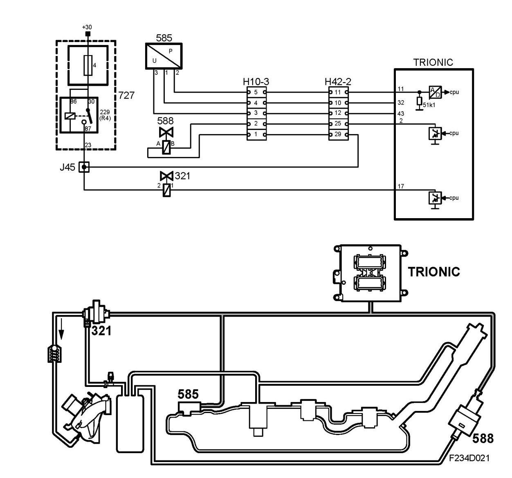
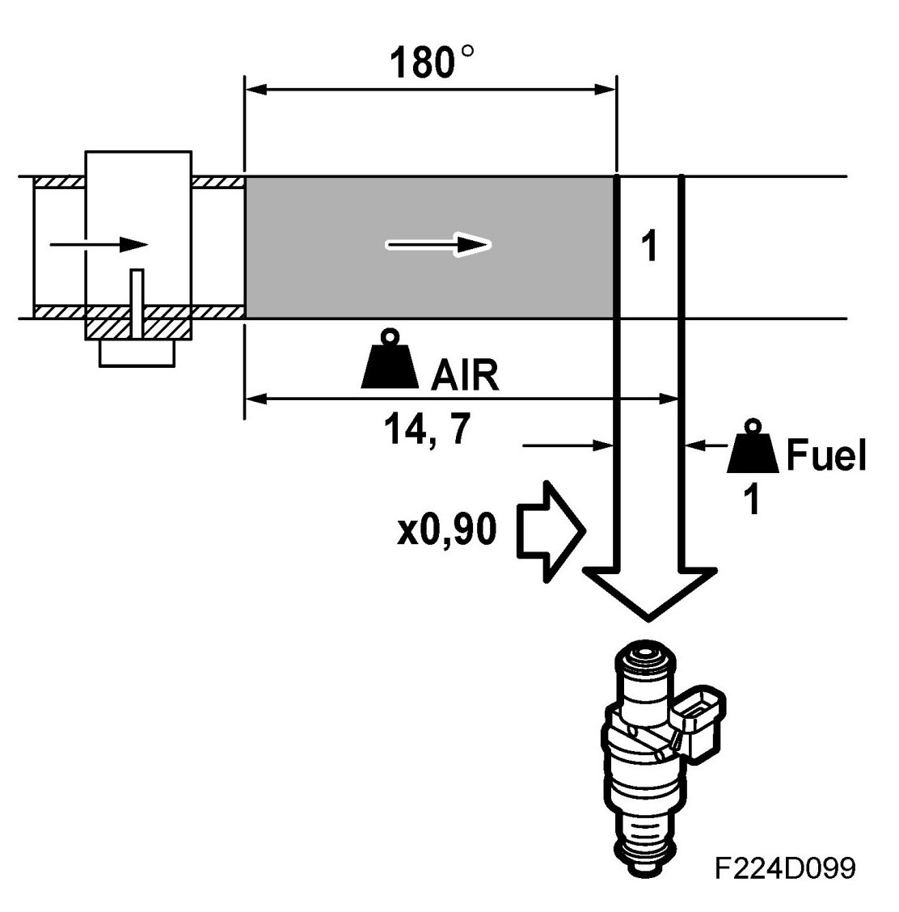
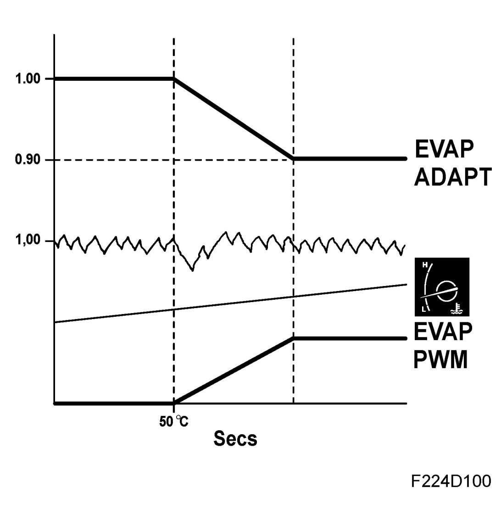
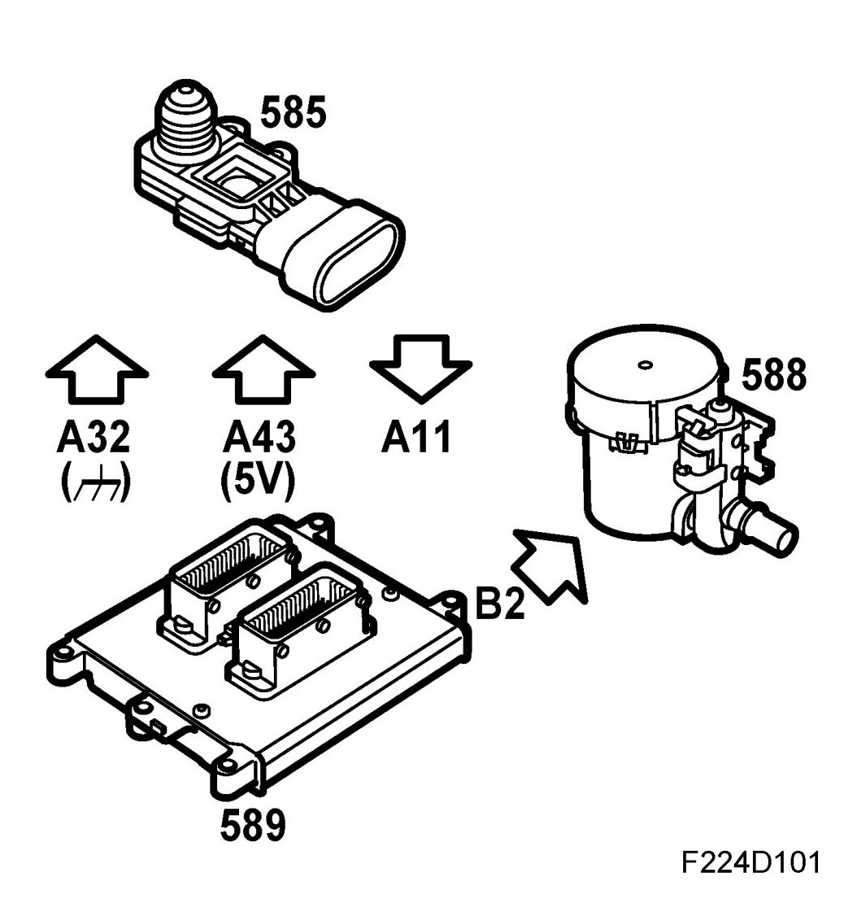

Ventilation
Ventilation

The illustration shows the system with vapor recovery (ORVR) and tank leak diagnosis.
The fuel which evaporates in the tank is passed through a pipe to the evaporative emission canister. The active charcoal in the canister absorbs the hydrocarbon vapors. When the engine starts, ambient air is drawn through the canister via the purge valve and a check valve into the intake manifold. The petrol vapors follow and are burned in the engine.
In currentless state, the purge valve is closed. It is supplied from the main relay and controlled with a 16 Hz PWM from control module pin 17(B). For tank leak diagnosis however the frequency is 8 Hz.

The flow is regulated by the pulse conditions so that is always constitutes a particular proportion of the total flow consumed by the engine.
If the air/fuel ratio of the flow differs from 14.7:1, the closed loop system is affected. However it is not the task of the closed loop system to correct for purge surplus and therefore the purge has a correction factor which is influenced by the closed loop system as soon as the purge begins. The entire lambda control deviation from 1.00 is moved to the purge correction factor, which means that the lambda control fluctuates around 1.00 (0%) even if the purge contains large quantities of hydrocarbon or consists of pure air.
When the purge is not active, a factor of 1.00 is used and the entire fuel error corrected by the closed loop system and the multiplicative and additative adaptation.
The limit value for purge adaptation is 0.75 or 1.25.
The following conditions should be fulfilled for the purge to be engaged:
- Lambda control active
- No fuel adaptation in progress, this takes place for 30 seconds every 5 minutes.
- Coolant temperature exceeds 40 degrees C.
- If the charge air temperature is below 15 degrees C, the car speed must exceed 6 km/h.
The function is active throughout the drive cycle and reduces the risk of valve noise. The valve leaks more when cold.
- Battery voltage below 16 V.
- No tank leak diagnosis active.
- Engine speed not below nominal idle speed but above 150 rpm.
Diagnosis tool shows 25% when the correction factor is 1.25 and -25% when the correction factor is 0.75.

Leak diagnosis

The on-board diagnosis must find a leak in the purge system corresponding to a hole of 0.5 mm diameter.
For this reason, a differential pressure sensor is mounted on the fuel pump cover and a shut-off valve for the atmospheric connection of the evaporative emission canister. When the shut-off valve is closed, a reduced pressure is created and maintained in the tank using the purge valve. Otherwise the system leaks, and a trouble code is set. Diagnosis is performed once per drive cycle.
The pressure sensor is supplied with 5V from the control unit pin 43(A), and grounded through control unit pin 32(A). Depending on the pressure difference between the tank and atmosphere, the pressure sensor gives a proportional voltage to control unit pin 11(A).
The shut-off valve is open in currentless state. It is supplied from the main relay and controlled by control unit pin 2(B).